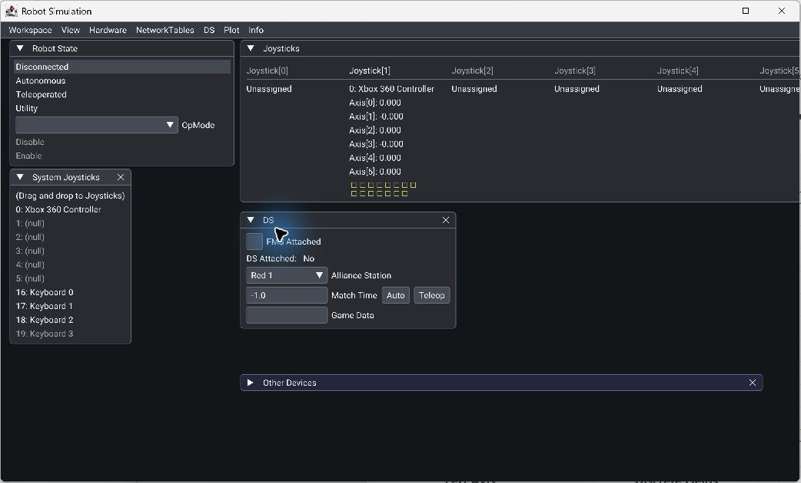
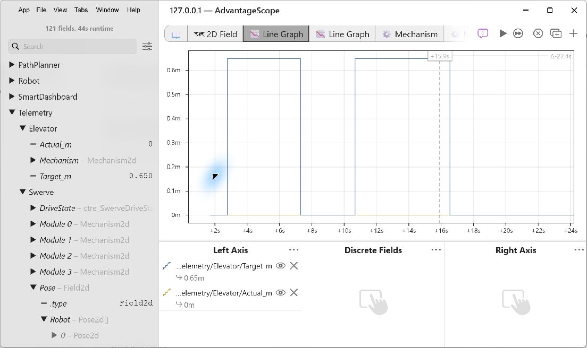
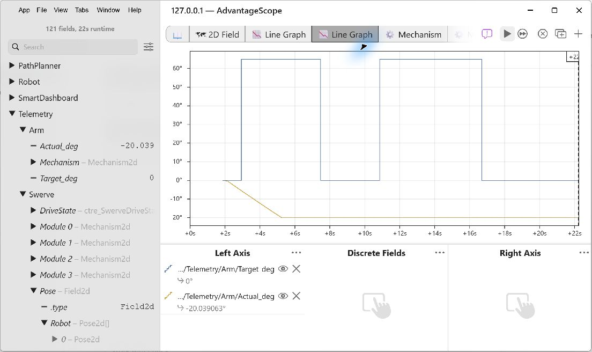

Buttons and Commands
Make a controller button change a target, then watch it on a graph.
Create the goal command
Your subsystem now exists and its simulation drawing is running. A command describes an action for it to perform. We’ll make one that changes the target—the position we ask for—and graph that target before adding motor control.
We’ll use the constants you found in the previous section to keep the goal within the mechanism’s allowed positions.
Add a private function to save the goal
Open Elevator.java. Find TODO 3a just below the existing sim and motor fields:
Before — replace the red TODO line
private final ElevatorSim sim = new ElevatorSim();
private final TalonFX motor = new TalonFX(ElevatorConstants.MOTOR_CAN_ID, TunerConstants.kCANBus);
// TODO 3a: Add a field to store the target position.
// TODO 7b: Add a Motion Magic request field.Before — replace the red TODO line
private final ArmSim sim = new ArmSim();
private final TalonFX motor = new TalonFX(ArmConstants.MOTOR_CAN_ID, TunerConstants.kCANBus);
// TODO 3a: Add a field to store the target position.
// TODO 7b: Add a Motion Magic request field.Modify this part of the file to match the following. Keep the existing sim and motor fields; replace only the TODO line:
After — the new field is green
private final ElevatorSim sim = new ElevatorSim();
private final TalonFX motor = new TalonFX(ElevatorConstants.MOTOR_CAN_ID, TunerConstants.kCANBus);
private double targetMeters = ElevatorConstants.LOW_METERS;
// TODO 7b: Add a Motion Magic request field.After — the new field is green
private final ArmSim sim = new ArmSim();
private final TalonFX motor = new TalonFX(ArmConstants.MOTOR_CAN_ID, TunerConstants.kCANBus);
private double targetDegrees = ArmConstants.LOW_DEGREES;
// TODO 7b: Add a Motion Magic request field.A field is a value the subsystem remembers between calls. private double declares a decimal number that only this class can change directly. It starts at the low preset, zero.
In your subsystem file, find the TODO 3b placeholder immediately below the command factory:
Before — replace the red TODO line
public Command setHeightGoalCommand(double goal) {
return runOnce(() -> {
// TODO 3c: Call the private function that saves the goal.
});
}
// TODO 3b: Add the private setHeightGoal(double goal) function here.Before — replace the red TODO line
public Command setAngleGoalCommand(double goal) {
return runOnce(() -> {
// TODO 3c: Call the private function that saves the goal.
});
}
// TODO 3b: Add the private setAngleGoal(double goal) function here.Replace the placeholder with the private function shown in green. Keep the command factory above it unchanged for this edit:
After — green lines are new or changed
public Command setHeightGoalCommand(double goal) {
return runOnce(() -> {
// TODO 3c: Call the private function that saves the goal.
});
}
private void setHeightGoal(double goal) {
targetMeters = Math.clamp(goal, ElevatorConstants.MIN_METERS, ElevatorConstants.MAX_METERS);
// TODO 7d: Send the goal to the motor controller.
}After — green lines are new or changed
public Command setAngleGoalCommand(double goal) {
return runOnce(() -> {
// TODO 3c: Call the private function that saves the goal.
});
}
private void setAngleGoal(double goal) {
targetDegrees = Math.clamp(goal, ArmConstants.MIN_DEGREES, ArmConstants.MAX_DEGREES);
// TODO 7d: Send the goal to the motor controller.
}goal is the requested position. Math.clamp keeps it between the minimum and maximum in Constants.java, then the function saves it in the target field. The elevator’s configured maximum height is 0.9 m; the earlier 1 m animation was an illustration of the conversion.
This function is private, so only this subsystem can call it. It saves a number for now; we’ll add motor control later.
Have the command factory call the function
Find the command factory containing TODO 3c:
Before — red lines will change
public Command setHeightGoalCommand(double goal) {
return runOnce(() -> {
// TODO 3c: Call the private function that saves the goal.
});
}Before — red lines will change
public Command setAngleGoalCommand(double goal) {
return runOnce(() -> {
// TODO 3c: Call the private function that saves the goal.
});
}Change the runOnce body so it calls the private function you just added. Keep the method name and parameter:
After — green lines are new or changed
public Command setHeightGoalCommand(double goal) {
return runOnce(() -> setHeightGoal(goal));
}After — green lines are new or changed
public Command setAngleGoalCommand(double goal) {
return runOnce(() -> setAngleGoal(goal));
}public Commandmeans other code can call this method and receive a command. A method that creates and returns a command is called a command factory.() ->describes work to do later.runOncecreates a command that calls your private function once when the command starts, then finishes. Creating the command does not change the target yet.- The subsystem’s
runOncealso makes this command require this subsystem. The scheduler—the code that runs commands—uses requirements to prevent two commands from controlling the same subsystem at once.
Next, we’ll connect buttons to this command so pressing a button changes the saved goal.
Graph target and actual position
Return to your subsystem file. Find TODO 6a below the imports near the top:
Before — find this code
import org.wpilib.command2.Command;
import org.wpilib.command2.SubsystemBase;
// TODO 6a: Add the telemetry imports.Replace TODO 6a with the three imports for telemetry and Talon configuration. Imports let Java find the classes used in our code:
After — green lines are new or changed
import org.wpilib.command2.Command;
import org.wpilib.command2.SubsystemBase;
import org.wpilib.telemetry.Telemetry;
import org.wpilib.telemetry.TelemetryTable;
import com.ctre.phoenix6.configs.TalonFXConfiguration;Inside the class, find TODO 6b below the target field and the TODO 7b placeholder:
Before — find this code
private double targetMeters = ElevatorConstants.LOW_METERS;
// TODO 7b: Add a Motion Magic request field.
// TODO 6b: Add a telemetry table field.Before — find this code
private double targetDegrees = ArmConstants.LOW_DEGREES;
// TODO 7b: Add a Motion Magic request field.
// TODO 6b: Add a telemetry table field.Replace TODO 6b with the telemetry table field. This table will hold the values we graph:
After — green lines are new or changed
private double targetMeters = ElevatorConstants.LOW_METERS;
// TODO 7b: Add a Motion Magic request field.
private final TelemetryTable telemetry =
Telemetry.getTable("Elevator");After — green lines are new or changed
private double targetDegrees = ArmConstants.LOW_DEGREES;
// TODO 7b: Add a Motion Magic request field.
private final TelemetryTable telemetry =
Telemetry.getTable("Arm");Tell the Talon the gear ratio
Find TODO 6c in the constructor. This is where we will tell the motor controller how motor turns relate to mechanism turns.
Before — find the red TODO
public Elevator() {
// TODO 6c: Configure the sensor ratio here.
// TODO 7c: Add gains and Motion Magic settings here.
// Setup Simulation
// Sets the simulated motor model. This setup is prepared for you; leave it in place.
motor.getSimState().setMotorType(TalonFXSimState.MotorType.KrakenX60);
}Before — find the red TODO
public Arm() {
// TODO 6c: Configure the sensor ratio here.
// TODO 7c: Add gains and Motion Magic settings here.
// Setup Simulation
// Sets the simulated motor model. This setup is prepared for you; leave it in place.
motor.getSimState().setMotorType(TalonFXSimState.MotorType.KrakenX60);
}Create a configuration, set SensorToMechanismRatio to the ratio we determined earlier, and apply it to the Talon. Leave TODO 7c for the Controllers section. Applying these settings does not ask the motor to move.
After — green lines are new
public Elevator() {
var config = new TalonFXConfiguration();
config.Feedback.SensorToMechanismRatio = ElevatorConstants.GEAR_RATIO;
// TODO 7c: Add gains and Motion Magic settings here.
var status = motor.getConfigurator().apply(config);
if (!status.isOK()) {
throw new IllegalStateException("Elevator Talon FX configuration failed: " + status);
}
// Setup Simulation
// Sets the simulated motor model. This setup is prepared for you; leave it in place.
motor.getSimState().setMotorType(TalonFXSimState.MotorType.KrakenX60);
}After — green lines are new
public Arm() {
var config = new TalonFXConfiguration();
config.Feedback.SensorToMechanismRatio = ArmConstants.GEAR_RATIO;
// TODO 7c: Add gains and Motion Magic settings here.
var status = motor.getConfigurator().apply(config);
if (!status.isOK()) {
throw new IllegalStateException("Arm Talon FX configuration failed: " + status);
}
// Setup Simulation
// Sets the simulated motor model. This setup is prepared for you; leave it in place.
motor.getSimState().setMotorType(TalonFXSimState.MotorType.KrakenX60);
}apply(config) sends these settings to the Talon. If that fails, the if block reports an error. The simulation setup at the end stays in place.
Find periodic(), which still contains TODO 6d:
Before — red lines will change
@Override
public void periodic() {
// TODO 6d: Publish target and actual position in meters.
}Before — red lines will change
@Override
public void periodic() {
// TODO 6d: Publish target and actual position in degrees.
}Replace TODO 6d with the following code. It logs the goal and the measured position each time the scheduler calls this method:
After — green lines are new or changed
@Override
public void periodic() {
telemetry.log("Target_m", targetMeters);
double mechanismTurns = motor.getPosition().getValueAsDouble();
telemetry.log("Actual_m", mechanismTurns * ElevatorConstants.METERS_PER_DRUM_TURN);
}After — green lines are new or changed
@Override
public void periodic() {
telemetry.log("Target_deg", targetDegrees);
double mechanismTurns = motor.getPosition().getValueAsDouble();
telemetry.log("Actual_deg", mechanismTurns * 360.0);
}getPosition() returns mechanism turns because we configured SensorToMechanismRatio. getValueAsDouble() reads that number. Multiply by meters per drum turn to get height. Phoenix handles the gear ratio, so we do not divide by it again.
private final TelemetryTable telemetryremembers the table we write to.finalmeans this field keeps referring to the same table.- The
getTablecall creates a table namedElevator. @Overridemarks a method supplied by the subsystem framework that we are filling in. The scheduler callsperiodic()repeatedly, normally every 20 milliseconds.telemetry.logpublishes each value under the name in quotes. The suffix_mtells us the unit. This project’s WPILib telemetry sends these values to NetworkTables, where AdvantageScope can read them.
Checkpoint 1 · Press the buttons and compare the lines
- Save and restart WPILib: Simulate Robot Code. While disabled, drag your Xbox controller from System Joysticks to port 1 in Joysticks. For keyboard input, assign a Keyboard entry to port 1 and check its mappings in the simulator’s DS menu.
- In AdvantageScope, connect to the simulator. Open a Line Graph tab and drag both
Target_mandActual_mfromTelemetry → Elevatorto the same axis on the graph. - Release the buttons, enable simulated Teleop, then press high and low a few seconds apart. Use Y then A.



Expected. The target jumps from 0 to 0.65 m and back to 0. The simulation is already connected to the Talon, but we have not sent a motor-control request, so its output is still zero volts. Actual position does not follow the target. The unpowered mechanism may move under gravity, so its line may move on its own before settling at a limit. If the target stays flat, check that Teleop is enabled, your controller is assigned to port 1, and the command calls the setter. Stop the simulator before the next step.